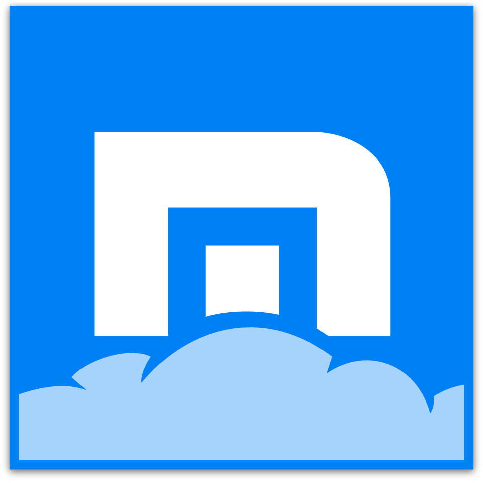
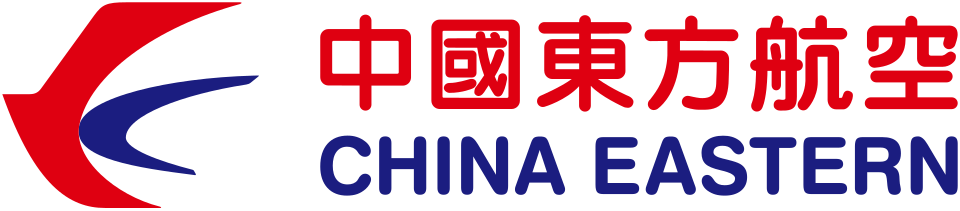
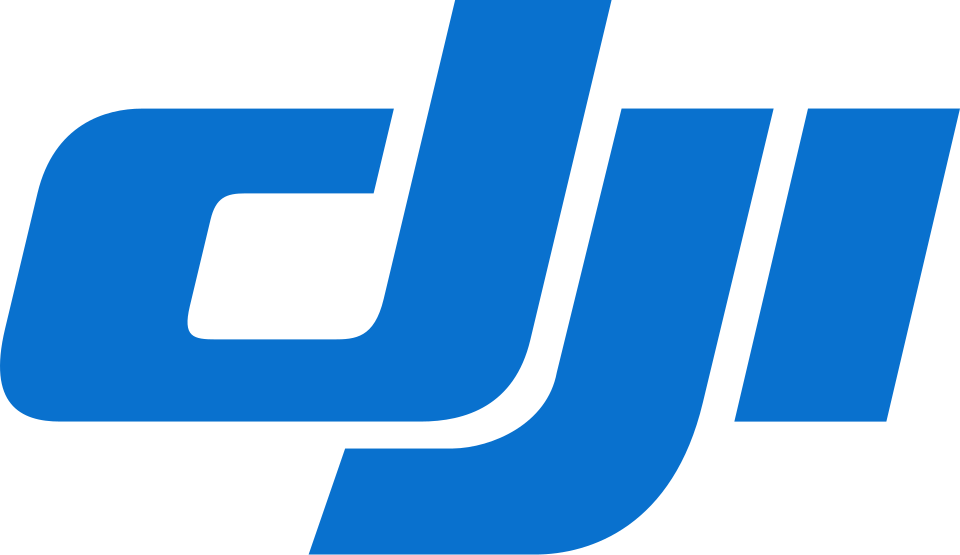

중국 브랜드 29
중국에서 시작한 브랜드 29개를 로고와 함께 모았습니다. 대표적인 중국 브랜드로는 화웨이(Huawei), 샤오미(Xiaomi), 레노버(Lenovo), 딥시크(DeepSeek), 중국동방항공(China Eastern Airlines), 알리익스프레스(AliExpress) 등이 있습니다. 수록 기준은 검수된 브랜드 설명이나 공식 웹사이트가 일치하는 위키데이터 개체에서 기원 국가가 확인된 경우로 한정했습니다.
다른 국가 보기
국가별 전체 →산업별로는 기술·전자 7개, 모빌리티 6개, 스포츠·아웃도어 4개, 식음료 3개 순입니다. 설립연도가 확인된 브랜드는 27개이며 가장 오래된 곳은 1900년, 가장 최근은 2023년에 시작했습니다. 시기별로는 1900~1949년 1개, 1950~1999년 16개, 2000년 이후 10개입니다. 수록 자료로는 로고 이미지 26개, 로고 변천 자료 1개를 갖췄습니다. 이 가운데 29개는 공식 웹사이트가 일치하는 위키데이터 개체로 연결해 두었습니다.
중국 브랜드 목록
 레노버Lenovo중국 · 1984년
레노버Lenovo중국 · 1984년레노버(Lenovo)는 중화인민공화국에 본사를 둔 다국적 민영 기업이다.
 딥시크DeepSeek중국 · 2023년
딥시크DeepSeek중국 · 2023년딥시크(DeepSeek)는 대형 언어 모델(LLM)을 개발하는 중국 인공지능 회사이다.
 비야디BYD Company중국 · 1995년
비야디BYD Company중국 · 1995년비야디(BYD Company)는 중국 광둥성 선전시에 본사를 둔 다국적 제조업 복합기업이다.
 중국공상은행Industrial and Commercial Bank of China중국 · 1984년
중국공상은행Industrial and Commercial Bank of China중국 · 1984년중국공상은행(Industrial and Commercial Bank of China)은 베이징시에 본사를 둔 중국의 부분 국유 다국적…
지리Geely중국 · 1986년지리(Geely)는 중국 저장성 항저우시에 본사를 둔 자동차 제조 기업 지주회사이다.

맥스톤Maxthon중국 · 2004년맥스톤(Maxthon)은 인터넷 익스플로러의 트라이던트 엔진을 사용하는 프리웨어 웹 브라우저이다.
 만리장성 자동차Great Wall Motor중국 · 1984년
만리장성 자동차Great Wall Motor중국 · 1984년만리장성 자동차(Great Wall Motor)는 중국 허베이성 바오딩에 본사를 둔 자동차 제조사이다.
 시노백 바이오테크Sinovac Biotech중국 · 1999년
시노백 바이오테크Sinovac Biotech중국 · 1999년시노백 바이오테크(Sinovac Biotech)는 베이징시 하이뎬구에 본사를 둔 중국의 바이오제약 기업이다.
 핀둬둬Pinduoduo중국 · 2015년
핀둬둬Pinduoduo중국 · 2015년핀둬둬(Pinduoduo)는 전통 농업 분야에 중점을 두고 공동구매와 온라인 소매 서비스를 제공하는 중국의 전자상거래 브랜드이다.
 인스타360Insta360중국 · 2015년
인스타360Insta360중국 · 2015년인스타360(Insta360)은 중국 선전시에 본사를 둔 카메라 및 영상 기술 기업이다.
 361도중국 · 2002년
361도중국 · 2002년361°는 중국의 스포츠웨어 및 애슬레틱 라이프스타일 브랜드이다.
 안타스포츠Anta중국 · 1994년
안타스포츠Anta중국 · 1994년안타스포츠(Anta)는 중국 진장시에 본사를 둔 다국적 스포츠 용품 기업이다.
 동인당Tongrentang중국
동인당Tongrentang중국동인당(Tongrentang)은 1669년에 설립된 중국의 제약회사이다.
화웨이Huawei중국 · 1987년화웨이(Huawei)는 중화인민공화국의 통신 장비 및 스마트폰 제조 업체이다.
 샤오미Xiaomi중국 · 2010년
샤오미Xiaomi중국 · 2010년샤오미(Xiaomi)는 중국에 본사를 둔 전자제품 제조 및 판매회사이다.
 알리익스프레스AliExpress중국
알리익스프레스AliExpress중국알리익스프레스(AliExpress)는 알리바바 그룹 계열의 온라인 쇼핑 서비스이다.
 비야디 자동차BYD Auto중국 · 2003년
비야디 자동차BYD Auto중국 · 2003년비야디 자동차(BYD Auto)는 중국 광둥성 선전시에 본사를 둔 자동차 제조사이다.
 중국석유화공Sinopec중국 · 2000년
중국석유화공Sinopec중국 · 2000년중국석유화공(Sinopec)은 베이징시에 본사를 둔 중화인민공화국의 석유 회사이다.
 국가전망공사State Grid Corporation of China중국 · 2002년
국가전망공사State Grid Corporation of China중국 · 2002년국가전망공사(State Grid Corporation of China)는 중국의 국영 전력 회사로, 전력 계통을 건설·운영하며 광범위한 지역에…

중국동방항공China Eastern Airlines중국 · 1988년중국동방항공(China Eastern Airlines)은 중화인민공화국 상하이에 기반을 둔 항공회사이다.
 중국건축공정총공사China State Construction Engineering Group Co. Ltd.중국 · 1982년
중국건축공정총공사China State Construction Engineering Group Co. Ltd.중국 · 1982년중국건축공정총공사(China State Construction Engineering Group Co.
 하이디라오Haidilao중국 · 1994년
하이디라오Haidilao중국 · 1994년하이디라오(Haidilao)는 1994년 중국 쓰촨성 젠양시에서 설립된 훠궈 레스토랑 체인이다.
 Xtep중국 · 1999년
Xtep중국 · 1999년Xtep은 중국 푸젠성 샤먼에 본사를 둔 스포츠웨어 기업이다.

DJI중국 · 2006년DJI는 중국 선전에 본사를 둔 기술 기업으로, 항공 사진과 비디오그래피용 상업용 무인 항공기(드론)를 제조한다.
 China Resources Beer중국 · 1993년
China Resources Beer중국 · 1993년China Resources Beer는 중국 베이징에 본사를 둔 양조 회사이다.
Peak Sport중국 · 1989년Peak Sport는 중국 취안저우시에 본사를 둔 스포츠웨어·신발 제조 기업이다.
하얼빈 맥주(Harbin Brewery)는 1900년 중국 하얼빈에서 설립된 중국의 맥주 양조 회사이다.
중국건설은행(China Construction Bank)은 중국 베이징에 본사를 둔 부분 국유 다국적 은행·금융 서비스 기업이다.
하이난 항공(Hainan Airlines)은 중국 하이난성 하이커우시에 본사를 둔 항공사이다.